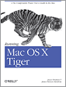
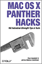
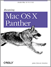
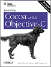

Biography
Books
|
Agile Web Development with Rails
(Pragmatic Bookshelf) |

Running Mac OS X Tiger
|
|

Mac OS X Panther Hacks
|

Running Mac OS X Panther
|
|
Cocoa in a Nutshell
|

Learning Cocoa with Objective-C
|
Articles
MacBook Pro: The Thermal Paste Question
Publish Date: May. 23, 2006
The MacBook Pro is a hot machine--literally so hot that it becomes uncomfortable on your lap after extended periods of use. Some users blame the excessive use of thermal paste between the main chips on the logic board and the thermal pipes. Is this the problem? James Duncan Davidson cracks open his MacBook Pro to find out.
Canon 5D: First Impressions
Publish Date: Oct. 12, 2005
The first thing that's noticeable about the EOS 5D is that it is a full-frame camera. I took a shot out of my hotel window with an EF 24-70 L zoom lens at 24mm. My reaction was, "So that's where my wide-angle has been hiding all these years." James Duncan Davidson reports on the Canon 5D after his first assignment with it.
Dev to Dev: James Duncan Davidson Interviews Panic
Publish Date: Mar. 23, 2004
The folks at Panic have been producing great software for the Mac since the System 7 days. James Duncan Davidson, author of "Running Mac OS X," interviews the Panic cofounders to discuss Cocoa, Xcode, surviving with Apple, and making it as an independent developer.
Ten Things I Dig About Xcode
Publish Date: Oct. 24, 2003
Following in the footsteps of "Ten Things I Dig About Panther," James Duncan Davidson further explores one of the facets near and dear to Mac developers--their application development environment. Apple is introducing Xcode, along with Panther, and Davidson takes it for a spin and reports on his initial findings.
Ten Things I Dig About Panther
Publish Date: Oct. 10, 2003
Now that the release of Panther is officially announced, it's time to take a close look at its key features. O'Reilly author James Duncan Davidson shows you the aspects of Panther that he really digs.
In Sync with CVS
Publish Date: Jul. 15, 2003
Apple's Backup and iSync applications are great for Dot-Mac subscribers, but some folks prefer to "roll their own" when synchronizing data among machines. The open source tool, CVS, is a good solution for "do it yourself" types. James Duncan Davidson shows you how to set it up.
Configuring sendmail on Jaguar
Publish Date: Sep. 10, 2002
Sendmail is powerful, but at times appears complicated too. James Duncan Davidson helps you unravel the sendmail knot so you can configure this awesome mail server on your Mac OS X system.
Setting up a Site Server with Jaguar
Publish Date: Aug. 24, 2002
Jaguar's debut adds many updates to Mac OS X's under-the-hood open source tools. In this article, James Duncan Davidson shows you how to tap Jaguar's ability to run your own site server, including an overview for setting up Sendmail.
Easy 802.11b Wireless for Small Businesses
Publish Date: Feb. 14, 2002
Small businesses looking for an edge over their larger competitors might consider providing wireless Internet access for their customers. It's affordable, and after reading these detailed instructions, darn easy.
A Week with the iPod
Publish Date: Nov. 28, 2001
We hit the streets with one of today's hottest tech toys, the iPod. Is it the "must have" MP3 player for Mac music lovers, or just an expensive spoke in Apple's digital hub? James Duncan Davidson gives you the inside scoop.
Mixing Java and Titanium: Part Three
Publish Date: Sep. 25, 2001
This is part three of a three-part series on Java and Mac OS X from a Java programmer's point of view. In this article, James Duncan Davidson takes a look at Cocoa from his side of the fence. He also shares his views on swing apps for Mac OS X.
Mixing Java and Titanium, Part Two
Publish Date: Sep. 11, 2001
As we continue to explore Java on Mac OS X with James Duncan Davidson, we look at the easiest way to create a double-clickable Java program on Mac OS X, plus experiences with Project Builder, and fun with Quartz.
Mixing Java and Titanium: Part 1
Publish Date: Sep. 4, 2001
Recently James Duncan Davidson published a series of weblogs on the subject of Java and Mac OS X for O'Reilly Network. These blogs contained lots of useful information that was too good to get buried deep within the network labyrinth, so we've updated them and are now presenting the content in a series of three articles. This is part one of the series.
Life After AirPort -- New Wireless Base Stations
Publish Date: Aug. 9, 2001
Is there 802.11b life after your AirPort Base Station goes up in smoke? You bet! We review the 3Com HomeConnect Wireless Gateway and the SMC Barricade.
Help Yourself Help Others
Publish Date: May. 25, 2001
As we look at the various ways to help give your Mac OS X applications a professional look, don't forget the "help" function for users. Here are the basics of adding help to your Mac OS X app.
Cocoa Vs. Carbon?
Publish Date: May. 23, 2001
When looking at Mac OS X frameworks to access the functionality of the system, many developers are debating Cocoa vs. Carbon. But they're not really competitors.
Blog
Macworld Conference Shoot Results
Wednesday February 21, 2007 3:23PM
In January, I posted quite a few entries here about my shoot at Macworld 2007. At the time, however, I didn't go into specifics about who the client was or what the project was all about. Well, I can now… read moreTuesday February 20, 2007 4:32PM
One of the more valuable bits of metadata that comes along with digital images is the date and time at which they were taken. When I'm traveling, however, I never remember to change the time on my camera when I… read moreMaking Full Use of Full Screen Mode
Monday February 12, 2007 2:58PM
One of my favorite ways of using Aperture is in Full Screen mode. In this mode, you get as much real estate as possible focused on the most important thing: Your photographs. When I first started using Aperture, however, there… read moreFriday February 09, 2007 2:28PM
One of the standard first operations that you might perform on a photograph is to apply auto-levels. Aperture makes this easy, and it's become almost a reflexive action for me. Usually, I almost use the Luminance auto-levels tool as that… read moreMonday January 29, 2007 7:07PM
Starting last evening, and continuing into today, word about the official upcoming release of Adobe Photoshop Lightroom 1.0 has criss-crossed the Internet. Even though this is a blog for and about Aperture, I think it's important to acknowledge and discuss… read moreA Reason for Using Externally Referenced Masters
Monday January 22, 2007 10:21PM
For a long time, I was perfectly happy with the managed library structure introduced with Aperture 1.0. The simplicity of having the application manage all those pesky RAW files outweighed the fact that they were packaged in an opaque structure.… read moreFriday January 19, 2007 10:01PM
After blogging during the experience of my recent Macworld 2007 assignment, I think I can safely say that it was a really good way to think in detail about my workflow and my use of Aperture. As well, some really… read moreMonday January 15, 2007 2:42AM
After wrapping up my last day of shooting at MacWorld on Friday, it was time to sit down and sift through photographs. And, boy, there were quite a few to go through. I shot 943 frames for my assignment. During… read moreFriday January 12, 2007 12:24AM
As I write this, it's Thursday evening and the end of MacWorld is in sight. It's a good thing too. I've lugged my camera gear all over the place and had my camera tugging at my neck for too many… read moreWednesday January 10, 2007 10:17PM
MacWorld continues to buzz on. The Keynote yesterday was incredible and, along with many of the other Inside Aperture bloggers, I was lucky enough to have a great seat right up front. Both the AppleTV and the iPhone look great… read moreMonday January 08, 2007 11:06PM
The buzz level is very high at MacWorld. As the ever-insightful John Gruber noted over coffee, tomorrow will either bring what everyone thinks will come—namely the ever-rumored iPhone—or we'll see something else that's so good that we won't care that… read moreSunday January 07, 2007 11:23PM
I'm revved with anticipation about MacWorld. But it's not for the same reason that most of you might be. Sure, I'm looking forward to the iTV, some sneak peeks into Leopard, some new hardware, and maybe a new phone. But,… read moreSo What's This IPTC Stuff Anyway?
Monday January 01, 2007 6:36PM
In a comment to my blog post from last week, Set Up Your Metadata View, a self-described N00b asked the question: What's an IPTC? Well, it's a good question with two primary answers. The first is that IPTC stands for… read moreMonday December 25, 2006 2:07PM
One of the areas in which Aperture excels is in managing, applying, and searching metadata about your images. To get the most of this feature, however, you need to make sure you add the appropriate metadata to your images in… read moreTuesday December 19, 2006 12:40PM
Last week, Ben Long penned a post, Aperture Alpha Channel Aberrations, in which he showed an organization trick for how he keeps different versions of the same Photoshop file stacked together in Aperture. His example underlines an important point that… read moreMonday December 11, 2006 12:59AM
This December, I'm taking some time to work on a few fundamentals before heading into a busy schedule of event shooting next year. One of the things I'm working on is a way to let other people "tap" into the… read moreFlickr Export for Aperture 1.0
Saturday December 09, 2006 2:59PM
Today, Connected Flow released FlickrExport for Aperture 1.0. Yay! I've been watching the development of this for a while, and am happy to see it go 1.0 and get out of beta. FlickrExport's sublime feature is that pulls the Title… read moreMonday December 04, 2006 4:52PM
Two weeks ago, I wrote that Color Management is Essential. The resulting comments, as well as personal discussions, I've had since then have been interesting indeed. One of the biggest questions that I've gotten has been: "So, what exactly makes… read moreMonday November 27, 2006 1:02AM
A week and a half ago, Derrick mentioned that he was testing out a SmartDisk FireLite 120GB hard drive with Aperture. Since I do so much of my photography and processing with Aperture on-location at events, it's important to me… read moreMonday November 20, 2006 8:00AM
If you use Aperture, you probably really care about your photographs. You might be a pro with a library that ranges into the 100's of GBs, or you might be an amateur with 20GB of data, but you care enough… read moreMonday November 13, 2006 3:46AM
I've been asked many times recently what my equipment setup looks like behind the scenes when I shoot a conference, such as last week's Web 2.0 Summit. I've been able to take a few people backstage and show them in… read moreMonday November 06, 2006 8:00AM
When I got home a week ago after shooting the Ajax Experience in Boston, and C4 in Chicago before it, I went through my now-normal ritual of migrating the Aperture project for the shows from my laptop to my trusty… read moreThursday November 02, 2006 7:11AM
I've found that I use two different kinds of workflow in Aperture: the kind that I maintain for my permanent library; and the kind that I use on-location. The reason for using two distinct workflows is that the demands of… read moreThursday November 17, 2005 1:47PM
If you've pulled down the latest J2SE 5.0 Release 3 via Software Update on Mac OS X Tiger, there's a little suprise in there that might mean something or might maybe mean nothing at all.Monday May 05, 2003 12:49PM
Wikis are cool. Really cool. If you haven't played around with one yet, you really need to. But they're not just for the web anymore.Saturday May 03, 2003 10:58PM
I've had the new iPod for just about 24 hours and have played with it quite a bit in that time. In a nutshell, it's a great improvement to an already very good product. Here are the things I've really liked about it.Learning Cocoa with Objective-C and December 2002 Tools Release
Wednesday March 12, 2003 4:56PM
Recently, I've received a spate of inquiries about a particular problem that readers of Learning Cocoa are having when building projects that contain a space in their name. Unfortunately, there are several projects in Learning Cocoa including some of the first applications in the book like Hello World and Currency Converter.Friday January 31, 2003 11:52PM
iPhoto 2 brings lots of little improvements to the program and of course the big much needed one: speed. Not a total improvement in speed, but noticeable. I downloaded the application about 12 hours ago and here's my thoughts so far.What Happened to the Good Solaris Software?
Monday November 04, 2002 2:19PM
I worked for Sun for 4 years during the Java boom. And during that time, if you wanted good server software, Solaris was your ticket. IBM, yeah, Linux, yeah, but really, Solaris was tip top. But that's changed in the year and a half since I left.Peeking into the Ruby Conference
Sunday November 03, 2002 7:00PM
RubyConf 2002 was held this weekend in Seattle WA. Rael Dornfest and I managed to join fellow O'Reilly Network author Daniel Steinburg for the day Saturday and watched as the small, but vibrant group of 50 something Ruby devotees… read moreMonday September 30, 2002 3:51PM
I've added a new presentation to my repertoire: "Mac OS X, Why the Alpha Geeks are Using It." It's an obvious tip of the hat to Tim O'Reilly's thoughts on OS X, with a focus on showing to people why OS X works for Unix weenies and giving a hands on exploration of the system.It's not a Party till the Cops Show Up
Saturday August 24, 2002 2:36AM
As part of the release of Jaguar (Mac OS X 10.2), Apple kept their stores open late on Friday night. It was quite a sight to see in Palo Alto, complete with a line that wrapped, literally, around the block.Monday August 19, 2002 1:57PM
In this foreword, er, afterword to Kent Beck's Guide to Better Smalltalk: A Sorted Collection, Ward Cunningham establishes his rational for a "don't program a computer you can't unplug" pattern. I've been working with Derrick on some articles for the O'Reilly Network that stress self-sufficiency and "owning the plug." They will start appearing after August 24th.Sunday July 21, 2002 5:30PM
It's that time of year again. Time for the O'Reilly Open Source Convention in San Diego. Even though this is only the second year for the convention to be hosted in the Sheraton Harbon Island, San Diego now means Open Source to me. The moment I walked out of the airport terminal and felt the perfect weather wash over me, I knew that I was here for a week full of heavy tech discussions mixed in with trips for Mexican food and the beach.On iTunes 3: Third Time is the Charm
Friday July 19, 2002 11:22AM
Amid all the ruckus (both good and bad) from MacWorld NY this year, I find myself happy that iTunes 3 cleans up my one big complaint as well as introduces nice new features.Software Update Brings Command Line Goodness
Monday July 15, 2002 11:19PM
In another move that shows that Apple is continuing to figure out that they now have a whole lotta Unix weenies using their OS, the latest version of Software Update adds a bonus feature in addition to its stated purpose of securing the update process. This new feature is a command line interface to the software update utility.Tuesday June 25, 2002 7:29PM
John C Dvorak is paid to make controversal statements. And this time he's made a big one. In fact, I think he's gone over the line. In his latest PCMag editorial he takes random personal potshots at the people Apple's Switch campaign.Alt-Tab Task Switcher for OS X
Wednesday June 19, 2002 10:34PM
So, I know this this guy who runs Mac OS X as his server and is seriously interested in running it as a desktop. Problem is that there are a couple of UI issues that keep him from picking up a TiBook and joining the fun. I may have found a solution for one of these issues.Monday June 17, 2002 11:33AM
Today, Microsoft released IE 5.2 for Mac OS X. This latest incarnation of the heavyweight browser introduces support for Quartz text smoothing under Mac OS X 10.1.5. Is text smoothing while browsing really a big deal? Is this a sign of good things to come.Wednesday May 29, 2002 1:46AM
Once again, I've taken to the seas on Neil Bauman's latest Geek Cruise: MacMania. The focal point of the cruise has become the library on board where 802.11b has been set up complete with a satellite uplink.Thursday May 16, 2002 1:58PM
I've been using OmniGraffle for about a year now. It's a really good tool that does what Visio did best in its early years. In the new 2.0 version there are several really nice improvements.Apple's Rendevous Equals Zeroconf
Tuesday May 14, 2002 12:30AM
After Steve Jobs announced Rendezvous at this year's WWDC, a lot of questions were in the air. What is it? Will it really be standardized?Sunday May 05, 2002 10:30PM
The O'Reilly Network team has descended on San Jose in preparation for the start of WWDC on Monday morning. As the sun went down Sunday evening, a whole new group of people emerged in downtown San Jose. Some of them were sporting shirts with various logos on them, others were carrying laptop bags, all were focused on one thing--getting ready for the conference that starts with a SteveNote first thing in the morning.Quit Stealing the Phone Cords!
Wednesday April 24, 2002 10:34PM
Today, I find myself in yet another hotel. "Thank goodness, there's high speed internet access here," I thought to myself as I sat my bags down. I proceeded to pull out my trusty TiBook and... Zip. Nada. No Net.Hello Photoshop, Goodbye Classic
Tuesday April 23, 2002 2:43PM
A little over a year since the official release of Mac OS X, and a bit over two years since I started using OS X full time, I am finally able to run Classic-free. The reason? My copy of Adobe Photoshop 7 finally arrived today.Wednesday April 17, 2002 11:48PM
On the cocoa-dev mailing list today, I saw a post for a new tool for browsing the Cocoa documentation. It's called Cocoa Browser, it's currently at version 0.3, and it's released under the GPL. The program is easy to use and has tons of promise. Even though it doesn't browse all of the Cocoa documentation, it's a great start and already part of my toolbox.Wednesday April 17, 2002 11:37PM
It's that time again for OS X users... Time to go to Software Update and get a fresh helping of OS X update goodness. Apple just posted the 10.1.4 update for download via Software Update.Jason Hunter's Look Behind the Hope
Friday March 22, 2002 6:30PM
Ever want to know what really happens behind the headlines that you read about. Jason Hunter gives us an account of some of the recent Apache and JCP events in this Servlets.com weblog posting.A New Hope for Open Source and Java
Friday March 22, 2002 5:04PM
Over the past few weeks, discussions between the Apache Software Foundation and Sun Microsystems have reached a fever pitch over several concerns raised by Apache. Sun has agreed to make changes to the upcoming JSPA revision that address Apache's concerns.New iPod and iTunes Software Released
Thursday March 21, 2002 12:21PM
At MacWorld Tokyo, Apple announced availability of a new iPod that can store 10GB of music. Even better for those of us that already bought iPods, there is new iPod (1.1) and iTunes (2.0.4) software available.Wednesday February 20, 2002 9:22AM
It's that time again. Time to go to Software Update and download the latest and greatest set of bug fixes for Mac OS X. There's more support for CD burners and digital cameras, a new version of OpenSSH, and much more.Tuesday January 15, 2002 12:33AM
In my recent blog titled "Mac Speculation and Fantasy", I talked a bit about a digital hub device that I wanted to attach to my home theater setup. Lots of people wrote me and recommended that I look at the Moxi. While the Moxi is indeed cool, I don't think that its what I wanted when I wrote that blog.Bianca Shows up at Apple Developer Party
Wednesday January 09, 2002 12:47AM
As I was wandering around mingling with lots of developers at Apple's MacWorld Developer Party, I was greeted by a sight of a couple of people making a whole lotta grilled cheese sandwiches while a drum circle was pounding out a rhythm just a few feet away.Developers' Reaction to the New iMac
Wednesday January 09, 2002 12:26AM
In the thirty-odd something hours since the unveiling of the new iMac, I've talked to lots of my developer friends about it. What's interesting is the reaction of those that don't already have a Mac.Monday January 07, 2002 10:30PM
I have to admit that part of me was disappointed that there was not a "One More Thing" at Steve Jobs' keynote this morning. That one tease line promising something beyond the rumor sites had me hoping for something more. But since we didn't get more, there's only one thing to do -- engage in some good old fashioned rampant speculation!One Part iMac + One Part Cube = New iMac
Monday January 07, 2002 11:59AM
The new iMac is really cool. No, scratch that. It's really really cool. Like most people, I envisioned that the new flat panel iMac would be a 15" flat panel screen with the hardware stuffed behind it. However, Steve Jobs gave some good reasons why that particular design strategy wouldn't work. And then he unveiled the new iMac.MacWorld Keynote Live on TechTV
Sunday January 06, 2002 11:13PM
You say you didn't manage to score a pass to watch Steve Jobs unveil whatever it is that Apple has been hyping to the max over the last week? TechTV is providing an alternative and broadcasting the keynote live.Sunday January 06, 2002 10:02PM
This weekend, I came home from Tahoe and found Mac OS X's Software Update informing me that there were new print drivers available. These usually aren't the kinds of things that generate much excitement in my home, but in this case I've been looking forward to one particular function of my HP 990cse printer to be enabled: dual sided printing.Wednesday January 02, 2002 9:01AM
Over the last few days, Apple's website has been making some bold statements about what is coming up for MacWorld next week. Can Apple live up to the hype that their marketing machine is creating? It's anybody's guess.Saturday December 29, 2001 11:57AM
In my A Week with the iPod article that ran last month, I complained about both the iPod and iTunes inserting space between tracks on "mix" discs. Several people wrote in with suggestions. I tried all of them and more, but the problem still shows up when listening to my favorite live mix DJ albums. It seems that the problem is inherit in the way the MP3 format works.Compact Flash: It Keeps Getting Better
Saturday December 29, 2001 11:09AM
I'm a big fan of my IBM 1GB Microdrive. Because it is a hard drive rather than solid state, it used to run rings around other CF cards when it came to performance. That was a year ago.Friday December 21, 2001 2:50AM
Apple's OS X team has an early stocking stuffer for us: Mac OS X 10.1.2. For those keeping track of build numbers, it's 5P48. Grab it via Software Update.Why Did Jordan Hubbard Go To Apple?
Saturday December 15, 2001 6:24PM
This interview by the Boston Globe gives a view into the reasons why one of the founders of the FreeBSD project now works for Apple on Mac OS X.Saturday December 15, 2001 1:10AM
A few weblogs ago, I noted an occasion where my iPod seemed to run through its battery very quickly. I had attributed this to a faulty battery meter, but instead it turns out to have a different root cause.Cocoa's Documentation Gets a Much Needed Improvement
Saturday December 08, 2001 1:57PM
I, along with a lot of other people, have commented that Apple's Cocoa documentation needs improvement. As part of Apple's upcoming December 2001 Developer Tools release, a lot of work has been done to improve the situation.When 2 out of 4 bars doesn't mean 50%
Friday December 07, 2001 9:22PM
On my way out the door for my daily walk, I grabbed my trusty iPod so that I would have some tunes to listen to. I hadn't charged it in days, so I checked the battery and found that it had 2 out of 4 bars. Happy, I went on my walk. And then....Monday November 19, 2001 7:37PM
Last week I accompanied my friend on a "Geek Cruise" -- a curious combination of typical conference sessions and non-stop informal meeting between programmers set on a moving hotel with a staff that caters to your whim. Much to my surprise, the chemistry of the event worked well.Apple Store Service Experience
Thursday October 25, 2001 10:42PM
There's nothing like loosing power to your system when you pick up your laptop to run to a meeting. However, I didn't want to give up my laptop for any amount of time to send it in. So, I decided to pay the newly opened local Apple Store in Palo Alto a visit and see if they could help.Saturday September 22, 2001 2:52AM
"Out thoughts are with those who were affected by the recent tragic events" says Apple's home page along with a link to the American Red Cross. Any statement like this from a company is usually either a show that there are really humans working there, or just a crass attempt at commercialism in disguise. In this case, there's more to the story.Death of an Airport Base Station
Sunday June 24, 2001 4:19PM
I'm suspicious of my recent affiliation with the O'Reilly Network. First I read about Chris Halsall's "Death of a Palm" Then I come home and what do I find? My trusty Aiport Base Station is dead. Suddenly it seems like an episode of the Sopranos around here.Thursday June 21, 2001 4:18PM
Mac OS X 10.0.4 is now available via Software Update. For the geeky among you Mac fans, the build number for this release is 4Q12. Several improvements to OS X appear to have been made in this release.A Bit More Objective-C from a Java Point of View
Tuesday June 19, 2001 11:52AM
Now that I have recovered from JavaOne, I have been once again exploring the terrain of Cocoa. And in the process, I've been digging deep again into Objective-C. In a previous weblog I discussed a few of the differences between Objective-C and Java. Now I'm going to take a look at a couple of things that are annoying, and sometimes painful, about working in Objective-C. Especially when coming from a Java background.Monday June 11, 2001 11:27AM
The twenty thousand odd people that were at JavaOne know exactly how I feel this week after the conference. In a word: Tired. There were five full days of 8AM wake-up calls for keynotes and 11PM BOF sessions and parties. At the end of it all however, it seems that the important take-away items from this JavaOne were not in the press releases or keynotes. They were found elsewhere.Swing Apps on OS X: It's all Good and getting Better
Wednesday May 23, 2001 1:08PM
The number one question people have for me when I tell them that I am developing Java on Mac OS X is, "How well do your applications run?" And the answer is that my experiences have been really good -- stunningly good in fact. But then, most of my applications have been faceless server applications and most of the cross-platform problems in Java hit GUI applications. As luck would have it, a few of my friends that develop GUI applications have started developing on OS X as well and I have good news to report.A Bit of Objective-C From a Java Point of View
Wednesday May 16, 2001 10:27PM
Because of Apple's weak Java based Cocoa documentation, I have had to get somewhat familiar with Objective-C in order to explore Cocoa-Java programming. Even though they are both highly object oriented languages, there are quite a few differences between the two.Cocoa and Java: Lots of Promise, But...
Tuesday May 08, 2001 11:50AM
Currently, the Mac Devcenter is running a series of articles by Mike Beam entitled Programming with Cocoa. This series is geared towards looking at Mac OS X's Cocoa APIs as expressed in Objective-C. The approach is a natural one given that Objective-C is the native language of Cocoa, but since I am approaching this weblog from the perspective of a Java coder, I've been experimenting with Cocoa's Java APIs.Saturday May 05, 2001 1:32AM
A lot of graphics magic happens in Mac OS X to make the UI go together the way it does. In fact, I'm still scratching my head wondering how its all done so well. To help peek behind the curtain, Apple has provided a tool that at least gives a glimpse into the magic that Quartz performs. It's called "Quartz Debug" and it can be found in the Developer folder after you install the Developer Tools CD.Experiences with Project Builder
Monday April 30, 2001 1:36PM
The centerpiece application on the Developer Tools CD that ships with every copy of Mac OS X is an Integrated Development Environment (IDE) called Project Builder. This is a new effort from Apple that is adept at writing C based kernel modules, Objective C Cocoa applications, C++ based I/O drivers, and general purpose Java work. Unlike most Java capable IDEs, it launches quickly and doesn't completely take over your monitor with tool bars and windows.MRJAppBuilder and Application Bundle Internals
Monday April 23, 2001 1:40AM
The easiest way of creating a double-clickable Java program on Mac OS X is to use Apple's MRJAppBuilder. It creates a nifty application bundle which contains all of the class and resource files needed by an application as well as some information that helps Mac OS X run it. Even better, the application bundles it creates are simple enough to be created or manipulated by other tools.Mac OS X & Java: Where's my $JAVA_HOME?
Saturday April 14, 2001 6:18PM
The first thing I ran into when starting to work with OS X's Java implementation was having to set my JAVA_HOME environment variable. Since the default Terminal shell on OS X is tcsh, it is easy enough to set your JAVA_HOME to the necessary string as long as you know what that string should be.Saturday April 14, 2001 12:59PM
NetBeans 3.2 is up and running on Mac OS X. However, in order to get it to work, you need to follow these instructions provided by the NetBeans team. They are easy enough to follow as long as you have access to a Windows, Solaris, or Linux machine that you can poach a needed JAR file from. New link: http://www.netbeans.org/ide/support/mac.htmlTuesday April 10, 2001 11:23PM
In my previous weblog, "Mixing Java and Titanium", I talked about how excited people were about the mixture of Titanium, Mac OS X, and Java. Now, it is time to dig and and see what is really going on here. What is it about Mac OS X that is so attractive? What is the substance underneath the sleek hardware and cool window effects?Thursday April 05, 2001 5:10PM
At last weeks O'Reilly Conference on Java in Santa Clara I unwittingly became the guy with the coolest toy around. Whenever I pulled out my new Titanium PowerBook to get some work done, people started coming by to ask questions about it. The shiny titanium shell must have had something to do with that. Needless to say, I didn't actually get much work done.Reviews
Learning Cocoa with Objective-C
Customer Reviews


Learning Cocoa with Objective-C Review
2003-02-04 12:30:34
Michael Reiland
I too thoroughly enjoyed this book. I have been programming in C for a number of years, but wanted to take the next step (excuse the pun) and get into Cocoa and Objective-C. This is the best resource for learning Cocoa that I've seen. I've tried a couple other books and nothing compares to this book's excellent pace and process.
If you are a beginning Cocoa programmer, this book is a must. I can't wait until a more advanced book on Cocoa comes out.


Learning Cocoa with Objective-C Review
2003-01-17 08:24:57
Gerry Davenport
After starting “Building Cocoa Applications: A Step by Step Guide,” another O‘Reilly title, and “Cocoa Programming for Max OS X” by Aaron Hillegass, I had to set them aside because they were filled with info that I was not looking for, ready for, or was not explained in a clear format--I felt lost and discouraged that I was not learning anything while I was reading them.
I picked up “Learning Cocoa with Objective-C, 2nd Edition” and read it from cover to cover without doing any examples, but I understood them like I was the one who created them. The book, although a bit simple in some parts (even for me), was straight forward and clearly understandable. The code that was being written was explained in detail, and there was nothing in there that was not part of the scope of the title. The book was a refreshingly clear read about “Learning Cocoa with Objective-C.”
I am ready for MR. James Duncan Davidson to write the next level Cocoa Programming book, because I need all the help I can get--hands on training would be great--any takers?


Learning Cocoa with Objective-C Review
2002-11-30 13:55:52
Daniel Stein
For those wanting to take their first steps in the world of Cocoa - ObjectiveC, I find it difficult to imagine a better introduction. The measured pace and set of very appropriate examples made it just right for me. The author's advice about necessary background is spot-on, and readers without it may be a little frustrated. There is not much material incorporated about OOP concepts, so I found that my experience with C++ and object-oriented concepts to be very useful in understanding the basics of how the Cocoa frameworks and the ObjectiveC syntax fit into the scheme of things. The edition I read contains numerous typos and minor errors but most of them are dealt with in the errata portion of the book website. Davidson has a friendly, enjoyable style and uses it well when the material allows it. Highly recommended!
Media Reviews
"'Learning Cocoa with Objective-C Second Edition' is a book rich enough to satisfy both the novice programmer and the has-been coder who would like to move over to OS X...Out of all the books I've seen on the topic, this book is not only the best but the least expensive, as well. Quality definitely outweighs quantity on this one, and I would recommend this book to anyone, novice or professional, who would like a guide to Cocoa."
--Dan Hollister, Macteens, March 2004
http://macteens.com/more.php?id=181_0_1_0_C
"By the time I got through it, I pretty much understood the whys and wherefores in OS X and how Cocoa apps behave. It peeled back the mystery for me...Apple wants application developers to succeed on the OS X platform and this book goes a long ways in making that process possible."--Robert Pritchett, MacNut, January 2003
Customer Reviews


Great book, time for v2.0
2005-08-21 10:47:44
leeg
When I can't remember how to do something in Cocoa, I turn to this book first. And the XCode documentation second, if I need to (which is rare). However, Cocoa is a fast-moving target and the nutshell doesn't contain Cocoa Bindings, Core Data/Image/Audio, WebKit or any number of other frameworks which have been introduced since Panther. An up-to-date version would be a bit heavier, but I'd have no trouble buying it and recommending it to colleagues.


Cocoa in a Nutshell Review
2004-04-02 09:05:52
--
I also like this book, nice book with comprehensive text inside:-)A complement to Apple's documentation, it is the only reference to the classes, functions, types, constants, protocols, and methods that make up Cocoa's Foundation and Application Kit frameworks.
Emoo


Cocoa in a Nutshell Review
2003-05-30 13:01:28
Ryan
Great reference! Very concise and helpful.
Media Reviews
8/10
--Emma Story, Slashdot.org, April 2004
http://books.slashdot.org/books/04/04/13/0223229.shtml?tid=107&tid=126&tid=156&tid=187
"Like other O'Reilly Nutshell books, this is not the first stop on the journey of learning the topic in question. Also like the other Nutshell books, it is the definitive reference for the topic that it covers...When faced with problems such as stopping coding, going into the documentation, or digging around to find the class documentation I need, there is just something magical about being able to flip through a book to find solutions."
--William Stevenson, "ACM Queue," November 2003
"An essential reference for serious Cocoa developers."
--Major Keary, AUSOM News, September 2003
"O'Reilly's new book 'Cocoa in a Nutshell' is the most thorough and up to date reference to the Cocoa API available. You don't want web pages that may or may not be accessible today, you don't want PDF's that fill your monitor while you're trying to code. The best programmer's reference is a good book--this is one of the best...If you're serious about mastering Cocoa, you want this book."
--DevDepot, September 2003
Customer Reviews


Excellent Book full of Gems of Information
2004-04-30 17:10:02
Bryan
This book is an excellent source of technical information for Mac OS X 10.3 for beginning to intermediate level support technicians. Information is presented very clearly and gets to the point without a lot of extra discussion.
I hope the author considers publishing a book covering the technical aspects of Mac OS X Server 10.3.


Running Mac OS X Panther Review
2004-03-03 09:32:16
John Suda
Book Review: “Running MacOSX Panther”
by John Suda
Most Mac users are perfectly happy that the Mac user interface shields them from the intricacies and complexities of the Unix-based “plumbing” beneath the surface of their machines. Others, however, like motorheads who compulsively tune, torque, and tinker with their souped-up cars, love to open up their Mac, so to speak, to get at the innards. This book is for them.
“Running MacOSX Panther” is a systematic guide to the core of OSX written, not just for power users, but for those with a compulsive need to know how the Mac works inside-out. It is for those who want master-level knowledge of how the Mac operates inside.
After a short history of the developmentof the Mac operating system, the book describes all the essentials: what happens during the startup and login process; how files organized and permissions set up; how preferences are maintained and edited; how users and groups are set up and administered, and more. The emphasis is on the Unix underpinnings and use of the command line to view, customize, and control the Mac. There is discussion on how to see and edit hidden files and directories, how to use the Unix “shell” and text editors, and how to edit Open Firmware - the Mac version of the PC’s “BIOS”. You can learn to create a user account for non-human users (not including your kitty!)
The advanced sections discuss the Open Directory, a type of database which stores information about the system and its components, and advanced networking information and options. Journaling is explained and an argument is made why disk defragmentation is not necessary on OSX. It convinced me.
An appendix providing guidance on installing Panther has sections for ordinary users as well as for Mac “motorheads”. The motorheads will enjoy reviewing the list of Boot Command key combinations.
Media Reviews
"[Running Mac OS X Panther] is written well, and if you happen to be sitting next to your computer while reading it, you'll be constantly torn between the two. There are lots of things you'll want to try right away...Check out this book if you want to learn the gory details of Mac OS X's core. It's short on gimmicks but long on information."
--Matthew Leingang, Slashdot.org, November 2004
"...well written, well edited, tight and crammed full of information pitched at just the right level. Davidson has done an excellent job with this book."
--Tony Williams, Slashdot.org, April 2004
http://books.slashdot.org/books/04/04/22/157218.shtml?%20tid=107&tid=185&tid=187&tid=190
"Last year I came back to the Macintosh platform after a 10 year absence. I couldn’t ask for a better companion for my return journey than 'Running Mac OS X Panther,' by James Duncan Davidson. Most of the GUI programs built into Panther (like Mail, iTunes, and iCal) are intuitive, but if you want to explore Panther’s internals you may need a guide...The book is full of useful tips on how to interact with or enhance GUI programs from the command line."
--Marc Garrett, Since1968.com, June 2004
http://since1968.com/article/43/review-two-new-macintosh-books-from-oreilly
"I'll come right to the point: Davidson's 'Running Mac OS X Panther' is an excellent book...James Davidson has targeted the advanced user who wants to learn useful advanced Macintosh techniques, but does not want swim through a 1000 page technical reference. It's a pleasure to find a book that covers complex material in a readable way, without losing focus amidst a flood of geeky detail...'Running Mac OS X Panther' is a fine little book that you can read, re-read, and enjoy yourself while doing so. It's full of useful advanced level information, but it doesn't read like a textbook. Highly recommended."
--David Weeks, MyMac.com, June 2004
http://www.mymac.com/showarticle.php?id=1740
"IMHO, Apple should have included this book with every copy of Panther - it would have filled that empty space in the box very nicely, added real value and more than justified the $230 I had to pay for my copy of Panther. As they didn't, may I recommend that, if you really care about what makes your Mac tick, you get to the nearest bookshop, as soon as you possibly can, and get your copy that way? You won't regret it. And NO, you can't borrow my copy, I need it right here alongside me, it's my security blanket!"
--George Carrington, Apple User Group Incorporated, April 2004
"This is the definitive guide to the core."
--Major Keary, PC Update, March 2004
"I'm not exaggerating when I say that Running Mac OS X Panther is the best book currently available on the inner workings of OS 10.3 Panther. If you want to become a Panther power user, look no further."
--Elsa Travisano, MUG ONE, March 2004
http://www.mugone.com/pages/Reviews/RunningMacOSXPanther.html
"'Running Mac OS X Panther' is the book the Mac Power users have been waiting for. Author James Duncan Davidson takes you deep inside Mac OS X's core and shows you how to make Pather Purr?If you are inquisitive and confident and want to dig about in Mac OS X and get the most out of it, you really can't go wrong with this book!"
--MacSofa, February 2004
http://www.macsofa.com/index.php/weblog/comments/13/
"Strengths: Drills deeper into the Unix-side of Panther without being snooty about it.
Weaknesses: None found...I love the Further Explorations at the end of each chapter and I thank whomever wrote the Preface , because it does such a sweet job outlining what is in the book...And my hat's off to O'Reilly for having and hosting weblinks for their authors and books...I really wish all my Linux buddies could read this book. Many of them have already quietly migrated, but this book will bring the rest of them over to this Apple platform...Do like I did, open the book and breath deeply as the aroma of Unix wafts up from the pages and shows the BSD Unix Core while allowing me to drink from a few power user tips and tricks...Not a Mac Guru yet? You will be if you can remember everything James Duncan Davidson wrote here."
--Robert Pritchett, Mac Companion, February 2004
http://www.maccompanion.com/archives/february2004/books.html#7
Customer Reviews


Best book yet on OS X!
2005-02-27 12:30:19
swasko
This is a great book! Having been a PC user for nearly fifteen years, I'm always looking for ways to juice more value out of my platform and applications.
Being a new switcher to Mac this year, this is just the book I was looking for to help me personalize OS X and make it my own.
The author covers all the bases and presents in a very fun, informative, and educational way. Topics from having more fun with your digital lifestyle to combining Apple scripting, perl scripting, and shell scripting to make your system do amazing things.
This is probably the best computing book I've read in years, and I read a lot!


From a newbie
2004-08-22 09:29:22
Mary Dixon
Being a relative newbie to the Mac compared to so many folks, I felt in the dark about all the little things that make a Macintosh what it is…the best personal computer bar none. Knowing so little about it compared to so many other long time users, I was quite anxious to learn all I could as fast as I could. Part of my difficulty includes about twelve years using another platform which so many others blindly use. This gave me enough knowhow to provide support to many other people. Since I’m not one to leave well enough alone, I am always pushing my computer to the max and getting more out of it than many other people might expect.
Mac OS X Panther Hacks, by Rael Dornfest and James Duncan Davidson and published by O’Reilly, provided me with more of an inside look and helped to give me what I had on the other platform…the ability to do things more efficiently and to do things that other users might not know about. I wanted to get into the “guts” of the Mac and Mac OS X Panther Hacks is helping me to achieve that goal.
Whether you are a newcomer to the Macintosh or a long time user, after getting into this Hacks book, you are bound to find something of use. There are one hundred hacks nicely numbered and arranged so you can read one at a time and know which one it was or read it by sections. The sections are arranged nicely into chapters according to the types and uses.
Once cracking this book open, it didn’t take me long to have a “eureka!” experience. “I didn’t know I could do that!” I heard myself say to myself. I learned something new that I bet no one else knows….or do they?
My favorite hack so far is using the services menu under the application menu. It’s an amazing thing and has been used more often than anything else I read in the book. The next thing I’m going to do is use more scripting and attach those scripts to my file folders. Fortunately, the authors provide lots of great examples. Whew…I don’t “do” Apple scripting…..yet. I will after reading this book.
The authors don’t exclude the use of other applications in “hacking” the OS but they sure do provide a lot of helpful ways to use them. My very favorite hack in that way was their suggestion to “Clutter Your Desktop with Music.” In that hack, #42, they suggest using a little iTunes add on called Clutter. Ohh…I don’t want to give all of it away. I want everyone to have a copy of this book. You just have to use this little app. It’s a great helper if you love your iTunes.
Some of these chapters will require return visits for me as I managed to find out that I knew very little about some aspects of “hacking” Panther. The book now resides on my desktop and will for the foreseeable future.
No one will lose by getting Mac OS X Panther Hacks and will surely be surprised at what they don’t know when they get through this wonderful volume. Be sure to check one out for yourself very soon. You won’t regret it.
Media Reviews
"I finally got round to reading my copy of the wonderful O'Reilly 'Mac OS X Panther Hacks' book, which, like all of the hacks books, is clever, informative, well-organised and useful; this one has the additional merit of having been co-written by my pal Rael Dornfest, who edits the line, and is witty, silly and very imaginative indeed. The hacks assembled in the text range from surprising things you can do with iTunes and iCal to hacking AppleScript to making OS X cooperate with perl and Python..."
--Cory Doctorow, BoingBoing.net, August 2004
http://www.boingboing.net/2004/08/11/mac_os_x_panther_hac.html